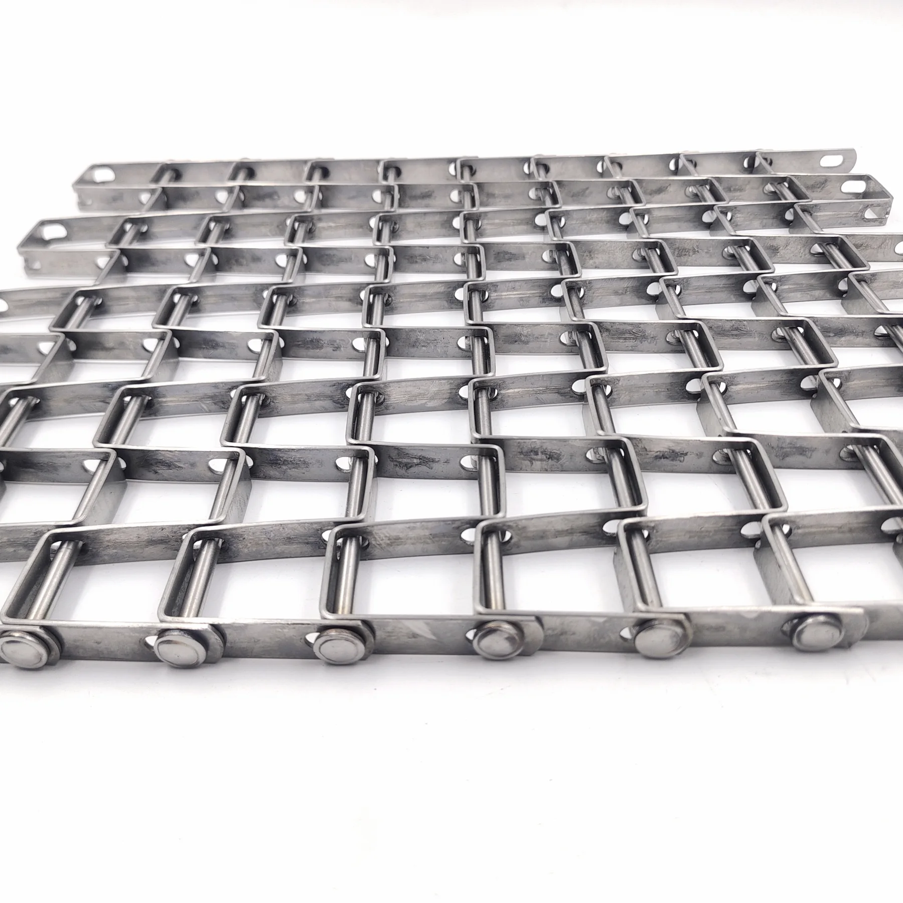
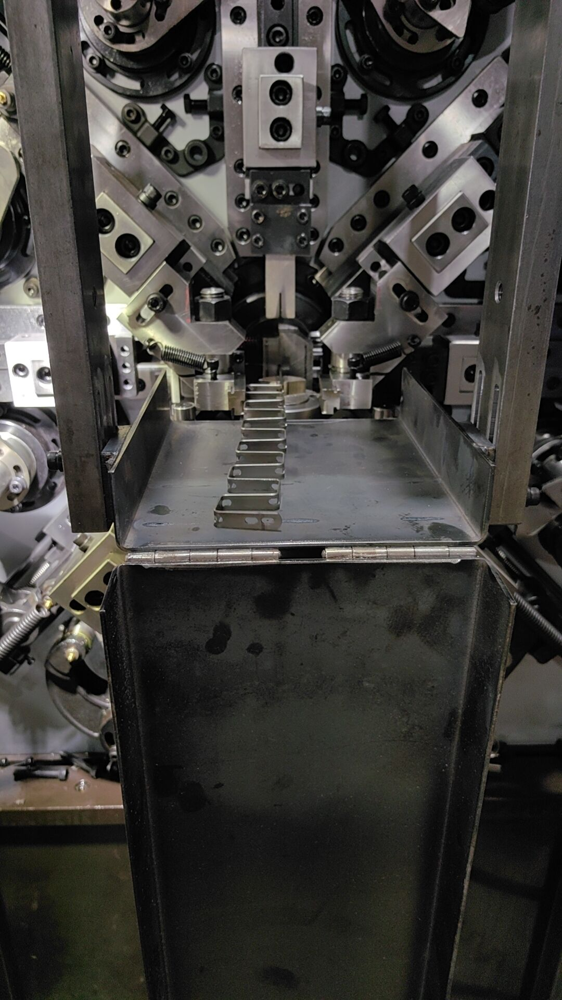
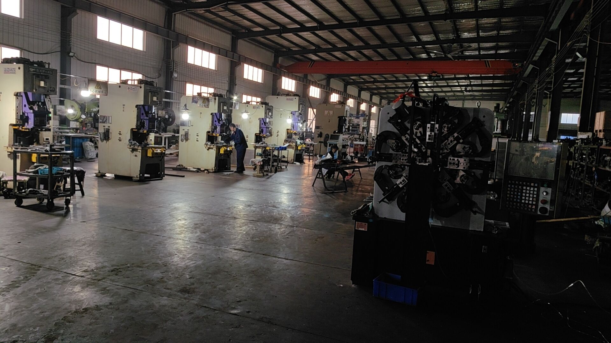
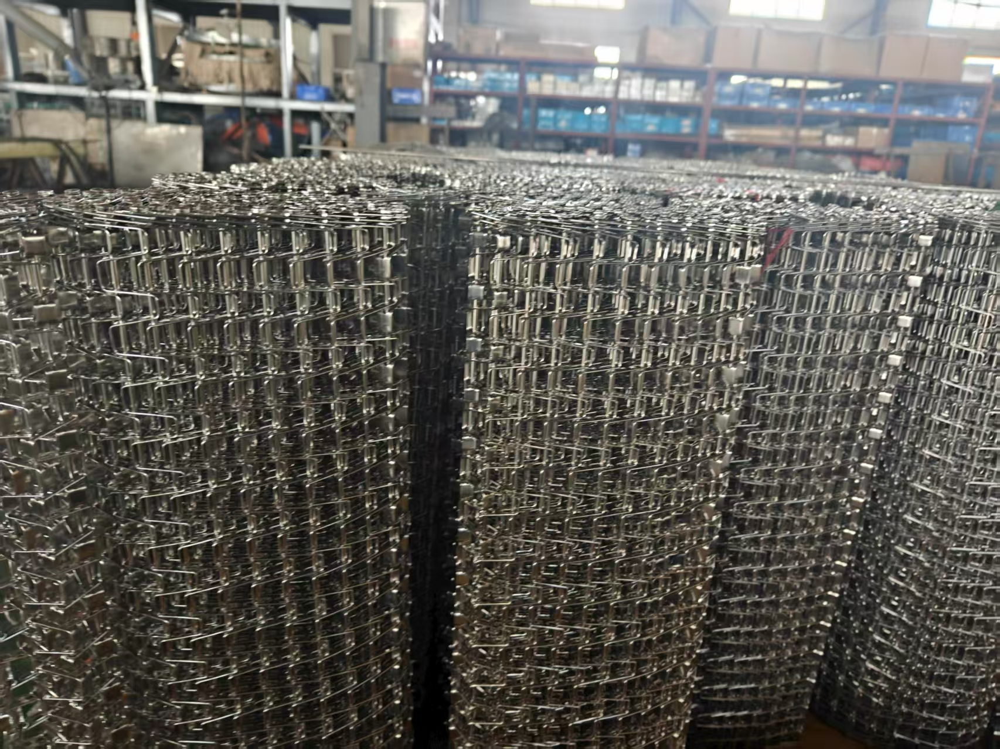
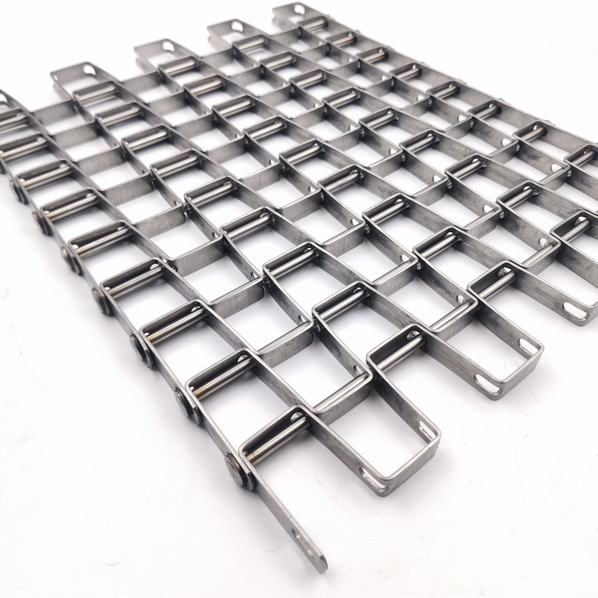
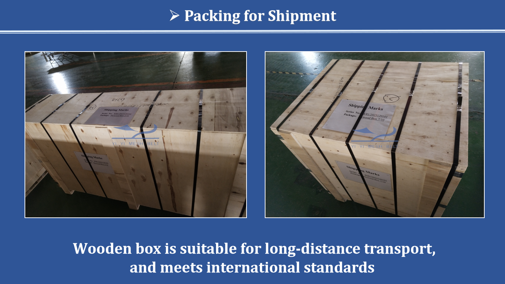
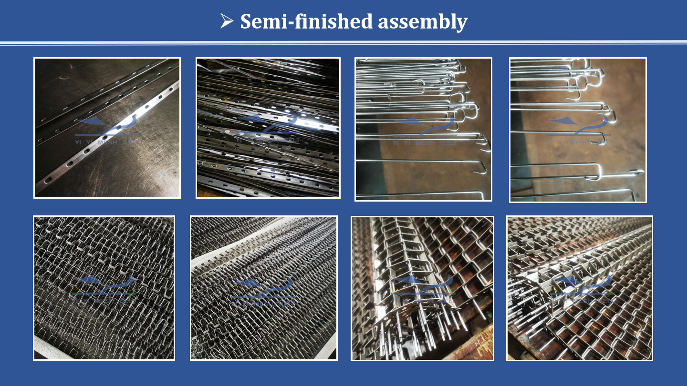

Product Video
Flat Wire / Honeycomb Belt Product Reference
Visual reference for baking ovens, cooling tunnels, washing lines, and replacement projects where surface support and airflow must be balanced.
Flat pressed wire construction creates a consistent, smooth conveying surface for direct product contact. Standard specification for tunnel baking ovens, continuous roasting lines, meat processing, and cooling tunnels where a flat surface prevents product marking and ensures uniform heat or cold exposure across the full belt width.

All dimensions custom per OEM drawing. Confirmed with engineering team before production begins. No standard fixed sizes.
| Parameter | Specification | Notes |
|---|---|---|
| Wire Diameter | 1.2mm-4.0mm · Custom | In-house drawn, all diameters tested |
| Spiral Pitch | Custom per OEM drawing | Determines surface flatness and open area balance |
| Rod Pitch | Custom per OEM drawing | Structural calculation per load and oven length |
| Belt Width | Custom - 200mm to 3,500mm+ | Confirmed to oven manufacturer drawing |
| Surface Profile | Flat pressed - both faces | Minimises product marking on direct-contact surface |
| Open Area | 20%-55% (pitch dependent) | Balance between airflow and flat surface requirement |
| Material Grades | SUS304 / SUS316L / Carbon Steel | SUS304 standard for baking; SUS316L for washdown |
| Temperature Range | Ambient to 800°C (SUS304) | Baking oven rated; furnace grades available |
| Surface Finish | Natural / Electro-polished | Electro-polished for premium hygiene-sensitive hygiene |
| Edge Construction | Welded or formed - per spec | Flat wire compatible edge variants available |
| Final Inspection | 100% - every belt before shipment | Engagement at target system fit verified |
| Weld Method | Drawing-based production | documented forming, welding, and inspection workflow |
| Lead Time | 15-25 working days from drawing | Standard production batch |
All parameters are custom per OEM drawing. Send your drawing or existing belt dimensions - we confirm the specification and quotation path after engineering review.
Real production photos from material intake through final QA. Provided to OEM customers on request.








Use this trimmed product video to review flat wire surface, honeycomb opening, edge style, and product support area before confirming an oven, cooling, or washing conveyor specification.
Visual reference for baking ovens, cooling tunnels, washing lines, and replacement projects where surface support and airflow must be balanced.
Every claim is backed by a verifiable manufacturing process or documented test result.
Every belt is checked against the approved drawing before shipment. This single test eliminates the most common cause of conveyor system failure on first installation.
Flat wire honeycomb belts are checked for surface levelness, rod pitch, sprocket engagement, and drawing consistency before shipment.

IQC →In-Process →Final Inspection →Final QA. No belt leaves the factory without passing all four stages.
Real operating environments. Each application listed has active YIYI Mesh Belt belts running in customer facilities.
Material grade selected to operating temperature, chemical exposure, and application material requirements. Not to cost alone.
Bakery downtime from belt failure is costly. We specialise in fast flat wire belt replacement - matched to your oven specification without modification. Emergency replacement available for critical production lines.
These represent the most common OEM engagement patterns for flat wire baking belt supply.
Bottom crust formation in tunnel baking depends on conductive heat transfer from the belt surface to the product base. A flat wire belt maximises contact area between belt and dough - ensuring uniform heat transfer and consistent bottom browning across the full belt width. A round-wire balanced weave belt transmits heat through point contacts only, creating uneven bottom colour particularly for thin or flat products.
Flat wire baking belts expand laterally and longitudinally as they pass through the oven heat zones. This thermal expansion must be managed through the take-up system at the cold end of the oven. YIYI Mesh Belt calculates thermal expansion coefficients for each specific belt specification and oven temperature profile - allowing correct take-up system design and preventing belt wander caused by asymmetric expansion.
The spiral pitch in a flat wire belt determines the spacing between the pressed flat cross-wires that form the belt surface. Tighter pitch (more wires per unit length) gives a flatter, smoother effective surface - but reduces open area, increases belt weight, and increases thermal mass. Wider pitch gives more open area (better air circulation for steam venting in baking) but creates a more corrugated surface between the flat wires.
For premium thin biscuit and cracker production, tighter pitch is standard to minimise surface marking. For bread and roll baking, moderate pitch balances surface flatness with sufficient open area for steam venting from the dough base. YIYI Mesh Belt selects pitch from your product type and oven design - not from a standard catalogue selection.
YIYI Mesh Belt flat wire baking belts are supplied as OEM and replacement belts for tunnel ovens across all major bakery equipment platforms. When ordering a replacement belt, send us: the oven manufacturer and model reference, current belt width, spiral pitch (measure distance between rods), wire diameter (use a digital calliper), and belt loop length. We will confirm the specification and quotation path after engineering review. For most standard oven platforms, we maintain a specification reference library - confirmation is typically immediate.
Flat wire belt has a defined product face and a drive face. The pressed flat surface should face upward (product contact). Threading the belt inverted is a common installation error - the drive face has a slightly different surface texture that can cause product marking and tracking issues. Check with our engineering team if you are unsure which face is correct for your oven configuration.
Before running product on a new baking belt, run the oven through 2-3 heat cycles at operating temperature with no product load. This normalises the residual stress in the wire from forming and drawing, stabilises the belt's dimensional response to heat, and burns off any surface residues from manufacturing. A correctly seasoned baking belt will track straighter and have a longer service life than one run straight to full production.
Set initial belt tension with the oven cold. The take-up system should allow approximately 15-30mm of thermal expansion per metre of oven length at maximum operating temperature. Over-tensioning a cold belt at room temperature results in excessive tension in the hot zone that accelerates spiral fatigue. Under-tensioning results in belt sag and tracking drift. Our engineering team provides calculated tension figures for your oven length and temperature on request.
Baking product residue (fats, sugars, flour) burns onto belt wire surfaces over time. The most effective cleaning method for SUS304 flat wire baking belts is controlled burnout in the oven during scheduled maintenance stops - running the oven at maximum temperature for 30-60 minutes with no product load. For persistent residue, a wire brush followed by a food-processing degreaser at cool temperature. Avoid aggressive chemical cleaning that may affect the passive oxide layer of the wire.
YIYI Mesh Belt has exhibited at the International Baking Industry Exposition (IBA) in Germany for 5 consecutive years - the world's leading trade fair for the baking and confectionery industry. This direct presence in the global baking community means our engineering team understands baking oven design requirements at the OEM level, not just from catalogue specifications.
Every belt is packaged to the same export standard regardless of order size. Belt integrity at delivery is our commitment.
Belt coiled to minimum bend radius specification, wrapped in moisture-sealed polyethylene film with silica gel desiccant inside. Protects against corrosion in sea container humidity conditions during 30+ day sea freight transit.
Corrugated cardboard inner box with edge protection. Belt coil supported on foam cradles preventing deformation during transit. Inner box sealed against dust ingress during port handling.
ISPM15 heat-treated timber pallet for international phytosanitary compliance. Pallet rated for standard 20ft and 40ft container loading. Strap-secured for forklift handling at destination port.
Each shipment includes: commercial invoice, packing list, certificate of origin (CCPIT or Form A on request), material test report (on request), ISO 9001 certification copy, and final inspection record. Additional customs documentation on request for EU, USA, and Australian market requirements.
YIYI Mesh Belt tracks confirmed shipments from factory to port. Vessel booking confirmation, bill of lading, and arrival updates are shared at each logistics milestone.
Every YIYI Mesh Belt belt is traceable from the wire rod batch used to produce the wire, through production records, to the specific belt shipped to your facility. This is a fundamental requirement for OEM customers with their own quality systems.
SUS304 and SUS316L wire rod sourced from certified Chinese and Taiwanese mills. Mill certificates showing alloy composition (Cr, Ni, Mo %, C content) filed per batch. Every batch passes YIYI Mesh Belt incoming alloy gun spectrometer test before acceptance.
Wire drawn from rod to finished diameter on YIYI Mesh Belt equipment. Finished diameter measured by digital calliper at regular intervals during drawing. Tensile strength and hardness tested on drawn wire sample per batch. Results recorded in production batch file.
Production batch number assigned at start of forming. Production parameters and inspection results logged per shift. Production record links batch number to wire batch, production date, machine ID, and operator record. Retained for minimum 5 years.
Final Inspection result recorded on signed QA form. Records: system fit verified, engagement pitch confirmed, test date, inspector ID, pass/fail result. final inspection record available as part of shipment documentation package on request.
Completed belt ships with batch number linking to full production and test record. Material test report issued on request. Full traceability from wire rod mill to customer facility is available for customer quality audit support.
Our approach to after-sales is built on the same principle as our production: consistency and reliability. Not a call centre - a real engineer who knows your specification.
Active orders and delivered belts receive engineering support on technical queries. Contact via WhatsApp for the fastest routing to the right team.
Your belt drawing and specification are retained in our engineering library. Reorders are placed by reference code - no re-measurement needed. Reorder lead time is typically 20% faster than first production for retained specifications.
For OEM partners, we follow up at 6 and 12 months after installation to check belt performance. If any tracking, wear, or engagement issue is reported, we review the production record and provide a root cause assessment - no charge for OEM partners.
"My work time is always online - see the message, reply promptly. This has been my habit for over 15 years. Doing business is not only about transactions, but about building genuine friendships." - YIYI Mesh Belt
Comparing key manufacturing differentiators. Based on verifiable production facts - not marketing claims.
| Capability | YIYI Mesh Belt | Typical China Manufacturer | European Supplier | Trading Company |
|---|---|---|---|---|
| In-house wire drawing | ✓YIYI Mesh Belt - own equipment | ✗ External | ✗ External | ✗ No manufacturing |
| Flat surface pressing | ✓Standard process | ✓Standard | ✓Standard | Depends on source |
| Controlled Production | ✓documented process control | Manual standard | Partial | ✗ Manual |
| Baking oven OEM supply | ✓All major platforms | Limited | ✓Some platforms | ✗ Catalogue only |
| Sample review | ✓New OEM projects | Paid | Paid | ✗ None |
| Engineering response | ✓Direct technical review | 24-72 hours | 48-72 hours | Variable |
| Final Inspection 100% | ✓Every belt | Selective | Selective | ✗ None |
* Comparison based on publicly available information and direct customer feedback. Contact us to verify any specific claim.
The more information you provide, the faster we can confirm specification and quote. Minimum required: industry, temperature, belt width, and drive system.
With these 5 items: budgetary quote + material recommendation after engineering review.
With A-F: confirmed production quote + drawing confirmation after specification review.
Email to info@yiyimeshbelt.com or WhatsApp +86 134 5177 3742. Drawings, photos, or reference documents are all accepted for engineering review.
Common failure patterns identified from baking oven operators and OEM equipment builders across Europe, Australia, and North America. These are the root causes we address in manufacturing.
Engineering-level answers for flat wire belt specification, baking oven replacement, and OEM supply questions.
Yes. Provide your existing belt sample, the oven manufacturer's part number, or key dimensions - spiral pitch, rod pitch, wire diameter, belt width, and edge construction - and we will produce a dimensionally matched replacement. We confirm the specification and can arrange sample review before committing to full production. Most major oven manufacturer belt specifications can be matched, including all major tunnel oven and baking system OEM platforms. If you have been sourcing from a Western belt supplier and are exploring alternatives, contact us with your specification and we will provide a comparison quote.
Flat wire belt: spirals are pressed flat after forming, creating a smooth, low-profile contact surface. Best for soft bread, pastry, and products where bottom surface marking must be minimised. Balanced weave belt: alternating left/right spirals maintain round wire profile. Better lateral stability and higher temperature resistance - standard for heat treatment furnaces and some high-temperature ovens. Biscuit belt: specialised flat wire variant with very specific pitch and weight specifications for biscuit and cracker lines - optimised for uniform browning and product release. If you are unsure which type matches your existing belt, send photos and we will advise.
Essential: belt width (outside edge to outside edge), spiral pitch (rod centre-to-centre longitudinal), rod diameter, wire diameter, belt length or loop circumference, and edge construction type. Helpful: photographs of both faces of the existing belt, edge detail, and any visible pitch markings or manufacturer stamps. You do not need every dimension - send what you have and we will identify the gaps in our first engineering response. WhatsApp photographs are usually sufficient to begin specification review.
SUS304 flat wire belt is suitable for continuous tunnel bakery temperatures up to approximately 280°C and intermittent peaks to 350°C. For high-temperature roasting applications (300-500°C continuous), we recommend SUS316L or 310SS. Above 600°C continuous, 310SS is required. If your application is borderline, provide the operating cycle - peak temperature, continuous temperature, and dwell time - and we will specify the correct grade. Specifying the wrong grade causes premature scaling and contamination risk.
Open area for baking applications typically ranges from 25-55%. The right open area depends on product type (small particles need tighter pitch to prevent fall-through), required airflow for crust formation, and steam venting in the first oven zone. For tunnel baking, airflow distribution to the product bottom is affected by belt open area - too tight and the underside browns slower than the top; too open and small products deform or fall through. We calculate the optimal pitch from your product specification and oven zone requirements.
Yes. We supply OEM and replacement belts compatible with all major baking oven platforms. For Tunnel Ovens, Rotary Rack configurations, and custom oven designs, provide the oven manufacturer's name, model reference, and the belt dimensions - we confirm compatibility. For ongoing OEM supply, we maintain a production file for your belt specification so repeat orders are produced to the same confirmed benchmark without requiring a new drawing review.
Edge construction depends entirely on your drive system. Standard options: welded rod end (most common for side-drive systems), formed wire edge (lighter weight, good for top/bottom sprocket), reinforced edge bar (heavy load, chain drive), and fabric edge (for nose bar and transfer point applications). We confirm edge construction from your drive system drawing or existing belt photos before production. Wrong edge construction is a fit issue that cannot be corrected after manufacturing.
Measure: overall belt width (outside edge to outside edge), spiral pitch (centre-to-centre distance between rods, measured longitudinally), wire diameter (use a calliper or send a small offcut), and belt length (total loop length or circumference). Photographs of both faces of the belt alongside a ruler are usually sufficient. The most important dimensions to get right are pitch and width - even rough measurements allow us to identify the specification. Send photos to info@yiyimeshbelt.com or WhatsApp +86 134 5177 3742 for engineering review.
Under standard tunnel bakery conditions at 180-280°C, YIYI Mesh Belt flat wire belts are designed for 3-5 years of service. Controlled Production ensures consistent weld strength across the full belt - the primary failure mode of manual-welded belts is early weld fatigue at the spiral-to-rod junction under sustained tension. In-house wire drawing ensures consistent tensile strength that resists the elongation under thermal cycling that causes pitch drift over time. Actual service life depends on peak baking temperature, daily operating hours, cleaning frequency, and belt tension setting.
Yes. For new OEM and bakery relationships, we can produce a sample to your confirmed specification for test-fitting before full production. Typical sample lead time is 7-10 working days depending on specification. We strongly recommend test-fitting on your oven before confirming full production - this verifies that pitch, width, and edge engagement are correct before investment. We retain a reference sample from your production record for quality comparison on future orders, ensuring repeat orders match the original benchmark.
Oven manufacturer, belt width, spiral pitch, wire diameter, temperature - send your baking system details or existing belt photos. Engineering team reviews the specification and confirms the next step.